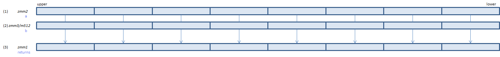

ANDNPD - AND Not Packed Double
ANDNPD xmm1, xmm2/m128 (S2
__m128d _mm_andnot_pd(__m128d a, __m128d b)

Calculate bitwise (~(1)) & (2) and set the result to (3).
VANDNPD xmm1, xmm2, xmm3/m128 (V1
__m128d _mm_andnot_pd(__m128d a, __m128d b)
VANDNPD xmm1{k1}{z}, xmm2, xmm3/m128/m64bcst (V5+DQ+VL
__m128d _mm_mask_andnot_pd(__m128d s, __mmask8 k, __m128d a, __m128d b)
__m128d _mm_maskz_andnot_pd(__mmask8 k, __m128d a, __m128d b)

Calculate bitwise (~(1)) & (2) and set the result to (3).
VANDNPD ymm1, ymm2, ymm3/m256 (V1
__m256d _mm256_andnot_pd(__m256d a, __m256d b)
VANDNPD ymm1{k1}{z}, ymm2, ymm3/m256/m64bcst (V5+DQ+VL
__m256d _mm256_mask_andnot_pd(__m256d s, __mmask8 k, __m256d a, __m256d b)
__m256d _mm256_maskz_andnot_pd(__mmask8 k, __m256d a, __m256d b)

Calculate bitwise (~(1)) & (2) and set the result to (3).
VANDNPD zmm1{k1}{z}, zmm2, zmm3/m512/m64bcst (V5+DQ
__m512d _mm512_andnot_pd(__m512d a, __m512d b)
__m512d _mm512_mask_andnot_pd(__m512d s, __mmask8 k, __m512d a, __m512d b)
__m512d _mm512_maskz_andnot_pd(__mmask8 k, __m512d a, __m512d b)

Calculate bitwise (~(1)) & (2) and set the result to (3).
x86/x64 SIMD Instruction List
Feedback